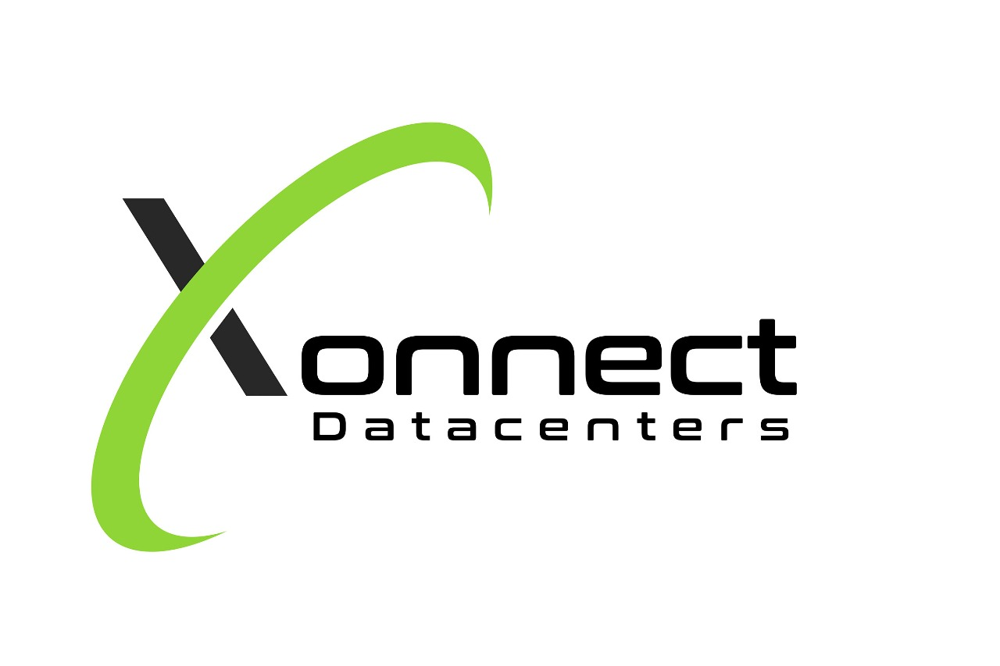

A Community Internet Exchange Point
Amaravati Internet Exchange (AMR-IX) is a venture of the registered non-profit organization, Amaravati People Foundation
AMR-IX is a neutral facility for ISPs, content providers and CDNs to connect with each other and exchange traffic in India. The goal is to improve network performance and optimize costs by keeping domestic traffic local and free up expensive long distance links.
AP Foundation is a non-sectarian organization registered under Section 8 of the Companies Act, 2013 whose mission statement is to undertake various digital initiatives in the state of Andhra Pradesh.
Membership at AMR-IX is open to any registered organization in the world
This includes ISPs, transit providers, content providers, CDNs, telcos, VoIP service providers, academic and research institutions and basically any organization that meets some basic requirements -
Here is a non-exhaustive list of benefits -
AMR-IX is a community operated Internet Exchange Point.
All the exchange members take part in the governance of the IX. Each member gets a vote and decisions are taken together through a voting process. The executioners of the decisions taken by the IX members are the board of directors for Amaravati People Foundation.
AMR-IX runs predominently on donations. If you would like to contribute, please contact us.
We are currently looking for donations in the following segments -
Thank you to our sponsors

Our facility is located at -
107, NRT Tech Park
Beside NH-5, Mangalagiri
Amaravati, Andhra Pradesh - 522 503
India
Please call us at +91 81253 37733.